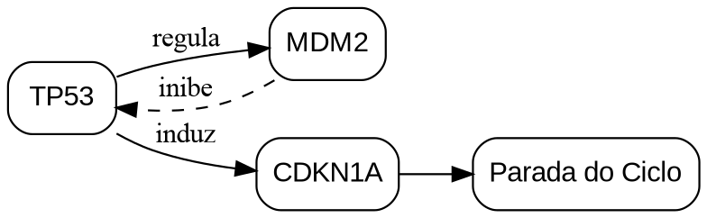

LINGUAGEM DOT // GRAFOS & REDES
Motor graphviz — Grafos e Redes DOT
O motor graphviz compila especificações na linguagem DOT para gerar grafos direcionados (digraph), árvores de decisão hierárquicas, redes biológicas e autômatos em formato vetorial SVG de alta resolução.
⚙️ Diretivas de Configuração (%%)
| Diretiva | Sinônimos | Tipo | Padrão | Descrição |
|---|---|---|---|---|
layout.width |
width |
String | 75% |
Largura relativa do grafo no documento (ex.: 80%, 14cm). |
layout.max_width |
max-width |
String | 500pt |
Largura máxima em pontos tipográficos. |
src |
file |
String | - | Importa código DOT a partir de arquivo .dot anexo. |
🧪 Exemplos Práticos
1. Grafo Direcionado Simples (Digraph)
Markdown (graphviz digraph)
```graphviz
%% width=75% max-width=480pt
digraph ProcessoClinico {
rankdir=LR;
node [shape=box, style="rounded,filled", fillcolor="#f1f5f9", fontname="Liberation Sans", fontsize=11];
edge [color="#475569", arrowsize=0.8];
Triagem -> Avaliacao;
Avaliacao -> ExameLaboratorial;
Avaliacao -> ExameImagem;
ExameLaboratorial -> Diagnostico;
ExameImagem -> Diagnostico;
Diagnostico -> Terapeutica;
Diagnostico [fillcolor="#bae6fd", color="#0284c7"];
Terapeutica [fillcolor="#bbf7d0", color="#16a34a"];
}
```2. Árvore de Decisão com Subgrafos e Clusters
Markdown (graphviz clusters)
```graphviz
%% width=85% max-width=580pt
digraph OntologiaGenetica {
compound=true;
fontname="Liberation Sans";
node [fontname="Liberation Sans", fontsize=10];
edge [fontname="Liberation Sans", fontsize=9];
subgraph cluster_genotipo {
label = "Nível Molecular & Genotípico";
style = filled;
color = "#e2e8f0";
node [style=filled, fillcolor="#ffffff", shape=box];
DNA -> RNA [label="Transcrição"];
RNA -> Proteina [label="Tradução"];
}
subgraph cluster_fenotipo {
label = "Nível Clínico & Fenotípico";
style = filled;
color = "#fef3c7";
node [style=filled, fillcolor="#ffffff", shape=ellipse];
Biomarcador -> ExpressaoClinica;
ExpressaoClinica -> GravidadeSintomas;
}
Proteina -> Biomarcador [label="Atividade Enzimática", ltail=cluster_genotipo, lhead=cluster_fenotipo];
}
```Resultado da Renderização
